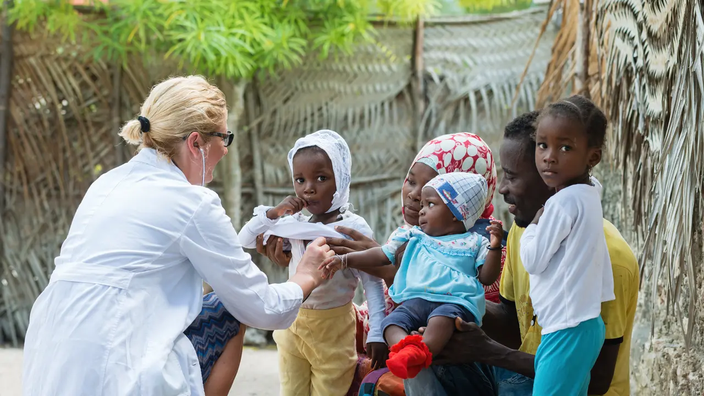

Online programmes
Postgraduate taught programme
MSc Global Health
Health does not exist in isolation—climate change, inequality, and demographic shifts all shape outcomes globally. From workforce shortages to migration and emerging technologies, global challenges affect every system. Policy, practice, and research must adapt.
